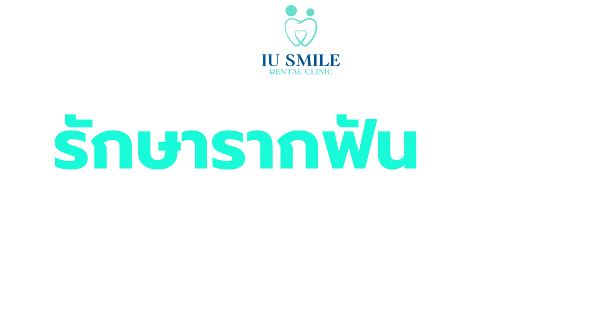
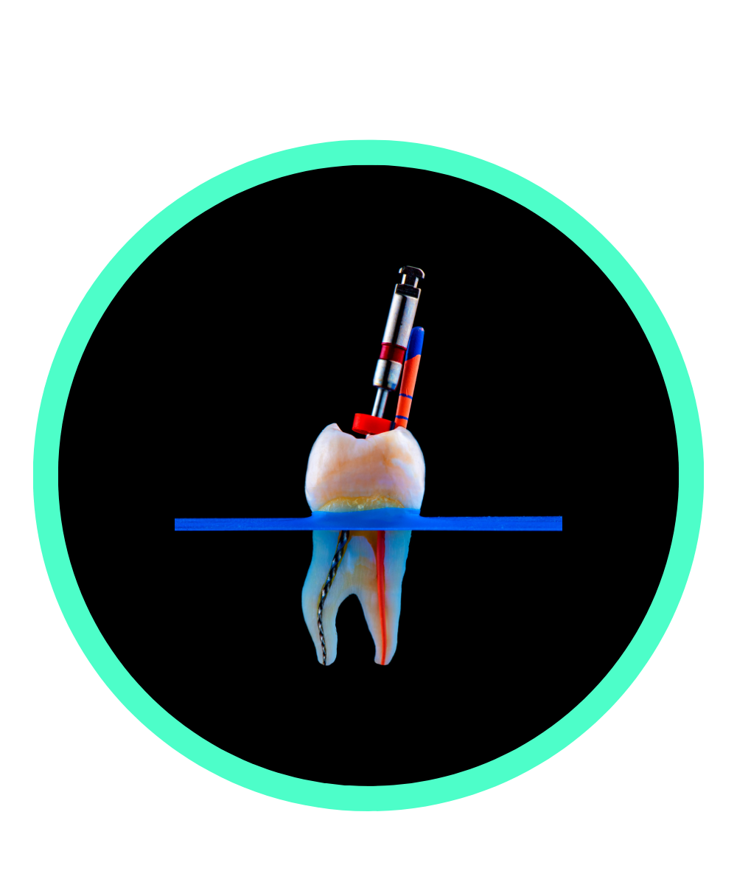
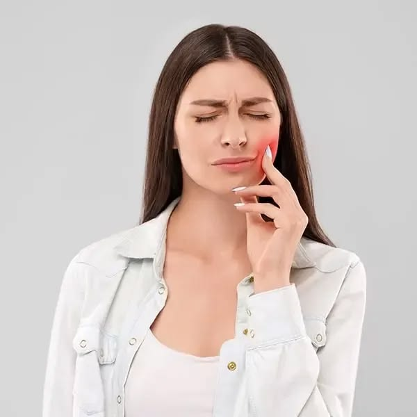
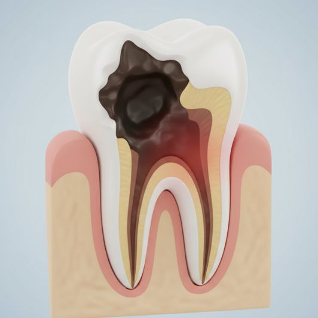
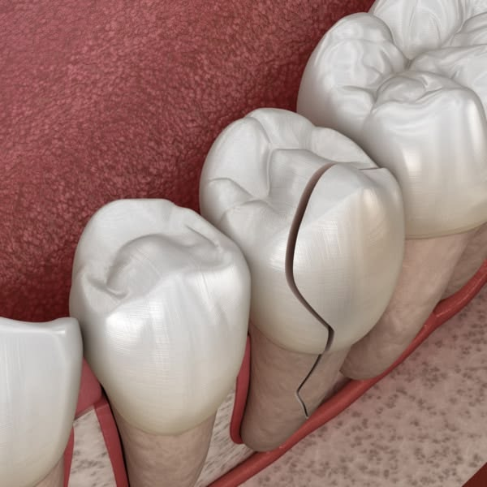

นัดหมายปรึกษา



ทันตแพทย์จะตรวจช่องปากและถ่ายภาพรังสี (X-ray) เพื่อดูรูปร่างของคลองรากฟัน ความยาวรากฟัน และประเมินความเสียหายหรือการติดเชื้อที่ปลายรากฟัน
ฉีดยาชาเฉพาะที่บริเวณซี่ฟันที่ต้องรักษาเพื่อให้ผู้ป่วยรู้สึกสบายและไม่เจ็บปวดระหว่างทำ ทันตแพทย์จะใส่ แผ่นยางกันน้ำลาย (Rubber Dam) คลุมบริเวณซี่ฟันนั้น เพื่อป้องกันไม่ให้น้ำลายเข้าไปในคลองรากฟัน (ซึ่งอาจมีแบคทีเรีย) และป้องกันไม่ให้ยาล้างแผลไหลลงคอ
ทันตแพทย์จะใช้เครื่องมือกรอเปิดรอยโรคลึกเข้าไปที่ตัวฟัน เพื่อสร้างช่องทางเข้าสู่โพรงประสาทฟันและคลองรากฟันที่อยู่ด้านใน
-ทันตแพทย์จะใช้เครื่องมือขนาดเล็กมาก (ทั้งแบบมือและแบบเครื่องมือหมุนเฉพาะทาง)
เพื่อคว้าน ทำความสะอาด และขยายคลองรากฟันแต่ละราก
-ใช้น้ำยาฆ่าเชื้อ (เช่น โซเดียมไฮโปคลอไทรต์) ฉีดล้างทำความสะอาดเพื่อกำจัดเชื้อแบคทีเรียและเนื้อเยื่อประสาทฟันที่ตายหรืออักเสบออกให้หมดจด
-หลังจากนั้นจะทำการวัดความยาวของคลองรากฟันเพื่อให้แน่ใจว่าทำความสะอาดได้ถึงปลายรากฟัน
หากเป็นการรักษาแบบแบ่งทำหลายครั้ง ทันตแพทย์จะใส่ยาฆ่าเชื้อไว้ภายในคลองรากฟันเพื่อช่วยกำจัดเชื้อโรคที่เหลืออยู่ และปิดทับด้วยวัสดุอุดชั่วคราว ในขั้นตอนนี้อาจนัดหมายเว้นระยะเวลา 1-2 สัปดาห์ เพื่อให้มั่นใจว่าอาการอักเสบหายสนิท ไม่มีอาการปวดหรือบวม
เมื่อคลองรากฟันสะอาดและแห้งสนิทดีแล้ว ทันตแพทย์จะทำการอุดปิดคลองรากฟันด้วยวัสดุพิเศษที่มีความยืดหยุ่นและเข้ากันได้กับร่างกาย (เช่น กัตตาเปอร์ชา - Gutta-percha) ร่วมกับซีเมนต์อุดรากฟัน เพื่อปิดผนึกไม่ให้แบคทีเรียกลับเข้าไปได้อีก
เนื่องจากฟันที่รักษารากฟันมาแล้วมักจะเปราะและแตกหักได้ง่ายกว่าฟันปกติ (เพราะไม่มีเลือดมาหล่อเลี้ยง) ทันตแพทย์จึงแนะนำให้ ทำเดือยฟัน (Post & Core) เพื่อเสริมความแข็งแรง และหลังจากนั้นจึงเข้าสู่กระบวนการทำครอบต่อไป เพื่อเสริมความแข็งแรงให้กับซี่ฟันที่ทำการรักษารากฟันมาแล้วนั่นเอง